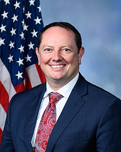

Eric Burlison
Congressman from Missouri

A Republican congressman from Missouri's 7th district, a member of the House Oversight Committee and its Task Force on the Declassification of Federal Secrets. 1
In 2024 he led a bipartisan letter asking the House to create a select subcommittee to investigate the government's handling of UAP, and he has pushed for the UAP Disclosure Act and whistleblower protections. At the September 2025 hearing he showed a video of a Hellfire missile appearing to strike an orb off Yemen and bounce off it. The Pentagon has not commented on the video. 2,3
Open in the interactive Watcher
Related
- UAP whistleblower hearing Showed the Hellfire video in 2025
- House Oversight Committee
- UAP Disclosure Act Backs the UAP Disclosure Act
Sources
- Press releases Office of Rep. Eric Burlison, 2026
- Burlison Wants U.S. House to Create Subcommittee on UFO's KNIM / Northwest Missouri Info, 2024
- Hellfire missile bounces off mysterious orb in stunning UAP footage shown to Congress FOX 5 New York, Sept. 2025